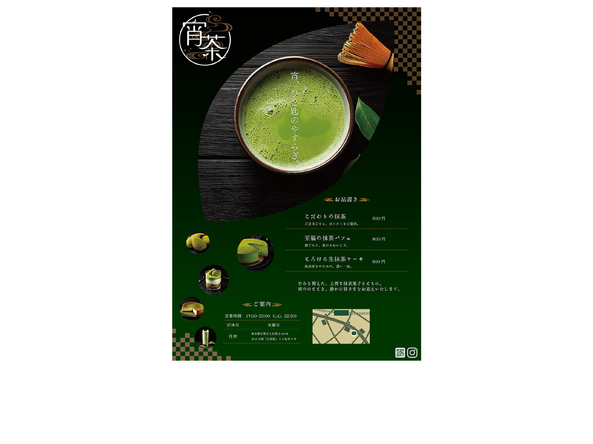
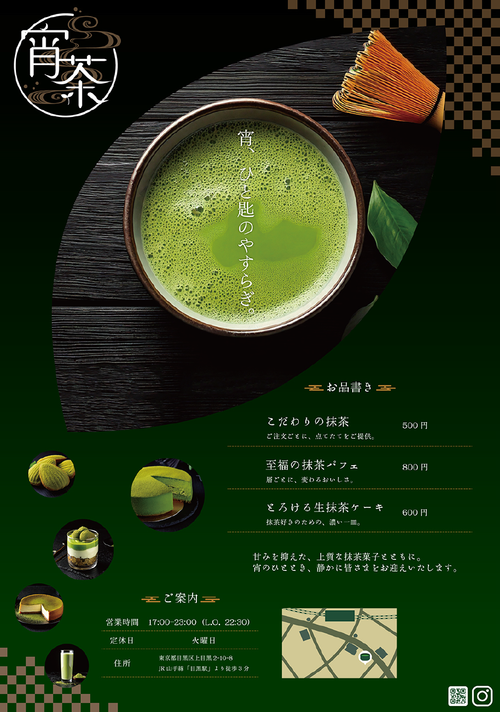

架空の和カフェ「宵茶」のA4フライヤーを制作しました。
静かな夜時間を楽しめるカフェであることが伝わるよう、落ち着いた配色と上品な文字組みを目指しました。
20～40代の働く女性。
自分のペースで過ごす夜の時間を大切にしたい人。
明るく華やかなカフェとは異なる、抹茶を扱う和カフェとしての上品さと、落ち着いた夜の雰囲気を一枚のフライヤーで直感的に伝えることを課題としました。
興味を持った人の来店につなげ、一度訪れるだけでなく、「またこの場所でゆっくり過ごしたい」と思ってもらえるような、静かに過ごす時間を提案すること。
お茶の葉から雫が垂れているように写真を配置し、視線が自然に下へ流れる構成を意識。
店名やコンセプトを印象づけながら、店舗情報までスムーズに目を通してもらえるレイアウトにしました。
落ち着いた雰囲気を表現するため、深みのある色調を基調としました。
上品な印象と可読性の両立を意識し、暗い背景の中でも文字が埋もれないよう細かく調整しました。
IMAGE
